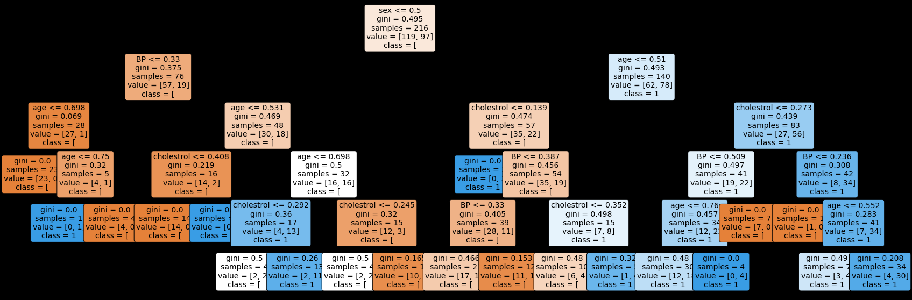

Studi Kasus Heart Disease 5
Contents
Studi Kasus Heart Disease 5#
Implementasi dengan menggunakan Naive Bayes , K-NN , K-Means Clustering dan Decision Tree
Membaca Data#
import pandas as pd
data = pd.read_csv('https://raw.githubusercontent.com/soumya-mishra/Heart-Disease_DT/main/heart_v2.csv')
data
| age | sex | BP | cholestrol | heart disease | |
|---|---|---|---|---|---|
| 0 | 70 | 1 | 130 | 322 | 1 |
| 1 | 67 | 0 | 115 | 564 | 0 |
| 2 | 57 | 1 | 124 | 261 | 1 |
| 3 | 64 | 1 | 128 | 263 | 0 |
| 4 | 74 | 0 | 120 | 269 | 0 |
| ... | ... | ... | ... | ... | ... |
| 265 | 52 | 1 | 172 | 199 | 0 |
| 266 | 44 | 1 | 120 | 263 | 0 |
| 267 | 56 | 0 | 140 | 294 | 0 |
| 268 | 57 | 1 | 140 | 192 | 0 |
| 269 | 67 | 1 | 160 | 286 | 1 |
270 rows × 5 columns
Class#
y_class = data['heart disease']
y = y_class.values.tolist()
print(y[:5])
[1, 0, 1, 0, 0]
Drop Target / Class#
X = data.drop(columns='heart disease')
X
| age | sex | BP | cholestrol | |
|---|---|---|---|---|
| 0 | 70 | 1 | 130 | 322 |
| 1 | 67 | 0 | 115 | 564 |
| 2 | 57 | 1 | 124 | 261 |
| 3 | 64 | 1 | 128 | 263 |
| 4 | 74 | 0 | 120 | 269 |
| ... | ... | ... | ... | ... |
| 265 | 52 | 1 | 172 | 199 |
| 266 | 44 | 1 | 120 | 263 |
| 267 | 56 | 0 | 140 | 294 |
| 268 | 57 | 1 | 140 | 192 |
| 269 | 67 | 1 | 160 | 286 |
270 rows × 4 columns
Preprocessing Min-Max#
Normalisasi data menggunakan Min - Max
from sklearn.preprocessing import MinMaxScaler
scaler = MinMaxScaler()
scaled = scaler.fit_transform(X)
nama_fitur = X.columns.copy()
scaled_fitur = pd.DataFrame(scaled,columns=nama_fitur)
scaled_fitur
| age | sex | BP | cholestrol | |
|---|---|---|---|---|
| 0 | 0.854167 | 1.0 | 0.339623 | 0.447489 |
| 1 | 0.791667 | 0.0 | 0.198113 | 1.000000 |
| 2 | 0.583333 | 1.0 | 0.283019 | 0.308219 |
| 3 | 0.729167 | 1.0 | 0.320755 | 0.312785 |
| 4 | 0.937500 | 0.0 | 0.245283 | 0.326484 |
| ... | ... | ... | ... | ... |
| 265 | 0.479167 | 1.0 | 0.735849 | 0.166667 |
| 266 | 0.312500 | 1.0 | 0.245283 | 0.312785 |
| 267 | 0.562500 | 0.0 | 0.433962 | 0.383562 |
| 268 | 0.583333 | 1.0 | 0.433962 | 0.150685 |
| 269 | 0.791667 | 1.0 | 0.622642 | 0.365297 |
270 rows × 4 columns
Save Normalisasi#
import joblib
filename = '/content/drive/MyDrive/datamining/tugas/model/norm.sav'
joblib.dump(scaler, filename)
['/content/drive/MyDrive/datamining/tugas/model/norm.sav']
Split Data#
split data 20%
from sklearn.model_selection import train_test_split
X_train, X_test, y_train, y_test=train_test_split(scaled_fitur, y, test_size=0.2, random_state=1)
X_train.shape + X_test.shape
(216, 4, 54, 4)
Inisialisasi Model Naive Bayes (gaussian)#
Eksekusi pada Model#
from sklearn.naive_bayes import GaussianNB
clf = GaussianNB()
clf.fit(X_train,y_train)
y_pred = clf.predict(X_test)
probas = clf.predict_proba(X_test)[:,1]
y_pred
array([0, 1, 1, 0, 1, 1, 1, 1, 0, 1, 1, 1, 1, 0, 1, 1, 0, 1, 1, 0, 1, 1,
0, 0, 0, 1, 1, 0, 0, 1, 1, 0, 0, 1, 0, 0, 0, 0, 0, 0, 0, 1, 0, 0,
1, 1, 0, 0, 1, 1, 0, 1, 0, 0])
Save Model Naive bayes#
filenameNB = '/content/drive/MyDrive/datamining/tugas/model/modelNB.pkl'
joblib.dump(clf,filenameNB)
['/content/drive/MyDrive/datamining/tugas/model/modelNB.pkl']
Menghitung Probas#
probas
array([0.45679326, 0.71532781, 0.51497631, 0.14216997, 0.6032597 ,
0.56976274, 0.64399715, 0.55675502, 0.44854497, 0.6579511 ,
0.55449199, 0.62978641, 0.53488247, 0.19771043, 0.60989258,
0.84122473, 0.22204937, 0.63114903, 0.51273849, 0.07377463,
0.61553336, 0.50078841, 0.46260317, 0.2475638 , 0.17060665,
0.87967817, 0.71289895, 0.15236739, 0.18455015, 0.57164786,
0.74028585, 0.46144298, 0.36198486, 0.58321812, 0.32051104,
0.29148322, 0.14421113, 0.16577117, 0.16712698, 0.44960568,
0.28132963, 0.73285876, 0.49066188, 0.28033567, 0.68523524,
0.5878491 , 0.42924538, 0.38648143, 0.51074566, 0.64821159,
0.35333848, 0.60848559, 0.0816834 , 0.21387506])
Menghitung Hasil Akhir#
from sklearn.metrics import accuracy_score, f1_score, precision_score, recall_score, classification_report, confusion_matrix
cm = confusion_matrix(y_test,y_pred)
precision = round(precision_score(y_test,y_pred, average="macro")*100,2)
acc_nb = round(accuracy_score(y_test,y_pred)*100,2)
recall = round(recall_score(y_test,y_pred, average="macro")*100,2)
f1score = round(f1_score(y_test, y_pred, average="macro")*100,2)
print('Konfusi Matrix\n',cm)
print('precision: {}'.format(precision))
print('recall: {}'.format(recall))
print('fscore: {}'.format(f1score))
print('accuracy: {}'.format(acc_nb))
Konfusi Matrix
[[22 9]
[ 5 18]]
precision: 74.07
recall: 74.61
fscore: 73.93
accuracy: 74.07
Predict Input To Naive Bayes Model#
list_input = []
list_input.append('60 1 150 199'.split())
list_input.append('50 0 120 289'.split())
list_input.append('70 1 130 322'.split())
list_input.append('67 0 115 564'.split())
list_input
[['60', '1', '150', '199'],
['50', '0', '120', '289'],
['70', '1', '130', '322'],
['67', '0', '115', '564']]
input to Model Normalisasi
norm = joblib.load(filename)
pred_input = norm.fit_transform(list_input)
pred_input=pd.DataFrame(pred_input,columns=nama_fitur)
pred_input
| age | sex | BP | cholestrol | |
|---|---|---|---|---|
| 0 | 0.50 | 1.0 | 1.000000 | 0.000000 |
| 1 | 0.00 | 0.0 | 0.142857 | 0.246575 |
| 2 | 1.00 | 1.0 | 0.428571 | 0.336986 |
| 3 | 0.85 | 0.0 | 0.000000 | 1.000000 |
Input to Model Naive Bayes
nb = joblib.load(filenameNB)
input_pred = nb.predict(pred_input)
input_pred
array([1, 0, 1, 0])
Inisialisasi Model KNN#
Eksekusi Pada model#
from sklearn.neighbors import KNeighborsClassifier
from sklearn import metrics
#Try running from k=1 through 30 and record testing accuracy
k_range = range(1,31)
scores = {}
scores_list = []
for k in k_range:
# install model
knn = KNeighborsClassifier(n_neighbors=k)
knn.fit(X_train,y_train)
# save model
filenameKNN = '/content/drive/MyDrive/datamining/tugas/model/modelKNN'+str(k)+'.pkl'
joblib.dump(knn,filenameKNN)
y_pred=knn.predict(X_test)
scores[k] = metrics.accuracy_score(y_test,y_pred)
scores_list.append(metrics.accuracy_score(y_test,y_pred))
scores
{1: 0.6296296296296297,
2: 0.6111111111111112,
3: 0.6851851851851852,
4: 0.6296296296296297,
5: 0.6851851851851852,
6: 0.6481481481481481,
7: 0.7407407407407407,
8: 0.6666666666666666,
9: 0.7407407407407407,
10: 0.7222222222222222,
11: 0.7592592592592593,
12: 0.7037037037037037,
13: 0.7407407407407407,
14: 0.7592592592592593,
15: 0.7407407407407407,
16: 0.7592592592592593,
17: 0.7592592592592593,
18: 0.7592592592592593,
19: 0.7407407407407407,
20: 0.7407407407407407,
21: 0.7407407407407407,
22: 0.7222222222222222,
23: 0.7222222222222222,
24: 0.7407407407407407,
25: 0.7222222222222222,
26: 0.7407407407407407,
27: 0.7222222222222222,
28: 0.7407407407407407,
29: 0.7037037037037037,
30: 0.7222222222222222}
Visualisasi Score#
%matplotlib inline
import matplotlib.pyplot as plt
#plot the relationship between K and the testing accuracy
plt.plot(k_range,scores_list)
plt.xlabel('Value of K for KNN')
plt.ylabel('Testing Accuracy')
Text(0, 0.5, 'Testing Accuracy')
nilai k dengan akurasi tertinggi
scores_list.index(max(scores_list)) , max(scores_list)
(10, 0.7592592592592593)
Implementasi Pada data Input#
Menggunakan KNN dengan nilai K = 12
knn12 = joblib.load('/content/drive/MyDrive/datamining/tugas/model/modelKNN12.pkl')
knn_pred = knn12.predict(pred_input)
knn_pred
array([0, 0, 1, 0])
Inisialisasi K-Means Clustering#
Eksekusi Pada Model#
from sklearn.cluster import KMeans
# #Try running from n=1 through 30 and record testing accuracy
n_range = range(1,31)
akurasi = {}
akurasi_score = []
for k in n_range:
# install model
kmeans = KMeans(n_clusters=k,random_state=0)
kmeans.fit(X_train,y_train)
# save model
filenameKMeans = '/content/drive/MyDrive/datamining/tugas/model/modelKMeans'+str(k)+'.pkl'
joblib.dump(kmeans,filenameKMeans)
y_pred=kmeans.predict(X_test)
akurasi[k] = accuracy_score(y_test,y_pred)
akurasi_score.append(accuracy_score(y_test,y_pred))
akurasi_score
[0.5740740740740741,
0.4074074074074074,
0.3888888888888889,
0.1111111111111111,
0.14814814814814814,
0.2222222222222222,
0.14814814814814814,
0.16666666666666666,
0.1111111111111111,
0.1111111111111111,
0.09259259259259259,
0.09259259259259259,
0.1111111111111111,
0.1111111111111111,
0.07407407407407407,
0.09259259259259259,
0.0,
0.037037037037037035,
0.07407407407407407,
0.0,
0.0,
0.0,
0.0,
0.0,
0.018518518518518517,
0.018518518518518517,
0.037037037037037035,
0.018518518518518517,
0.018518518518518517,
0.018518518518518517]
Visualisasi Hasil K-means#
%matplotlib inline
import matplotlib.pyplot as plt
#plot the relationship between K and the testing accuracy
plt.plot(n_range,akurasi_score)
plt.xlabel('Value of K for K-means')
plt.ylabel('Testing Accuracy')
Text(0, 0.5, 'Testing Accuracy')
Nilai n dengan akurasi tertinggi
akurasi_score.index(max(akurasi_score)) , max(akurasi_score)
(0, 0.5740740740740741)
Inisialisasi Decision Tree#
Eksekusi Pada Model#
from sklearn.tree import DecisionTreeClassifier
dtc = DecisionTreeClassifier(max_depth =5, random_state = 42)
dtc.fit(X_train, y_train)
DecisionTreeClassifier(max_depth=5, random_state=42)
Decision Tree Rules Text#
#import relevant functions
from sklearn.tree import export_text
#export the decision rules
tree_rules = export_text(dtc,
feature_names = list(nama_fitur))
#print the result
print(tree_rules)
|--- sex <= 0.50
| |--- BP <= 0.33
| | |--- age <= 0.70
| | | |--- class: 0
| | |--- age > 0.70
| | | |--- age <= 0.75
| | | | |--- class: 1
| | | |--- age > 0.75
| | | | |--- class: 0
| |--- BP > 0.33
| | |--- age <= 0.53
| | | |--- cholestrol <= 0.41
| | | | |--- class: 0
| | | |--- cholestrol > 0.41
| | | | |--- class: 1
| | |--- age > 0.53
| | | |--- age <= 0.70
| | | | |--- cholestrol <= 0.29
| | | | | |--- class: 0
| | | | |--- cholestrol > 0.29
| | | | | |--- class: 1
| | | |--- age > 0.70
| | | | |--- cholestrol <= 0.25
| | | | | |--- class: 0
| | | | |--- cholestrol > 0.25
| | | | | |--- class: 0
|--- sex > 0.50
| |--- age <= 0.51
| | |--- cholestrol <= 0.14
| | | |--- class: 1
| | |--- cholestrol > 0.14
| | | |--- BP <= 0.39
| | | | |--- BP <= 0.33
| | | | | |--- class: 0
| | | | |--- BP > 0.33
| | | | | |--- class: 0
| | | |--- BP > 0.39
| | | | |--- cholestrol <= 0.35
| | | | | |--- class: 0
| | | | |--- cholestrol > 0.35
| | | | | |--- class: 1
| |--- age > 0.51
| | |--- cholestrol <= 0.27
| | | |--- BP <= 0.51
| | | | |--- age <= 0.76
| | | | | |--- class: 1
| | | | |--- age > 0.76
| | | | | |--- class: 1
| | | |--- BP > 0.51
| | | | |--- class: 0
| | |--- cholestrol > 0.27
| | | |--- BP <= 0.24
| | | | |--- class: 0
| | | |--- BP > 0.24
| | | | |--- age <= 0.55
| | | | | |--- class: 1
| | | | |--- age > 0.55
| | | | | |--- class: 1
Rules Decision Tree Plot Diagram#
#import relevant packages
from sklearn import tree
import matplotlib.pyplot as plt
#plt the figure, setting a black background
plt.figure(figsize=(30,10), facecolor ='k')
#create the tree plot
a = tree.plot_tree(dtc,feature_names = nama_fitur,class_names = str(y),rounded = True,filled = True,fontsize=14)
#show the plot
plt.show()

Hasil#
dtc_pred = dtc.predict(X_test)
dtc_pred
array([0, 1, 0, 1, 0, 0, 0, 0, 0, 1, 0, 0, 1, 0, 1, 1, 1, 0, 0, 0, 1, 0,
0, 1, 0, 1, 0, 0, 0, 0, 1, 0, 1, 1, 0, 0, 0, 0, 0, 0, 1, 1, 1, 0,
1, 1, 1, 0, 0, 1, 0, 1, 1, 0])
cm_dtc = confusion_matrix(y_test,dtc_pred)
precision_dtc = round(precision_score(y_test,dtc_pred, average="macro")*100,2)
acc_dtc = round(accuracy_score(y_test,dtc_pred)*100,2)
recall_dtc = round(recall_score(y_test,dtc_pred, average="macro")*100,2)
f1score_dtc = round(f1_score(y_test, dtc_pred, average="macro")*100,2)
print('Konfusi Matrix\n',cm_dtc)
print('precision: {}'.format(precision_dtc))
print('recall: {}'.format(recall_dtc))
print('fscore: {}'.format(f1score_dtc))
print('accuracy: {}'.format(acc_dtc))
Konfusi Matrix
[[21 10]
[11 12]]
precision: 60.09
recall: 59.96
fscore: 60.0
accuracy: 61.11